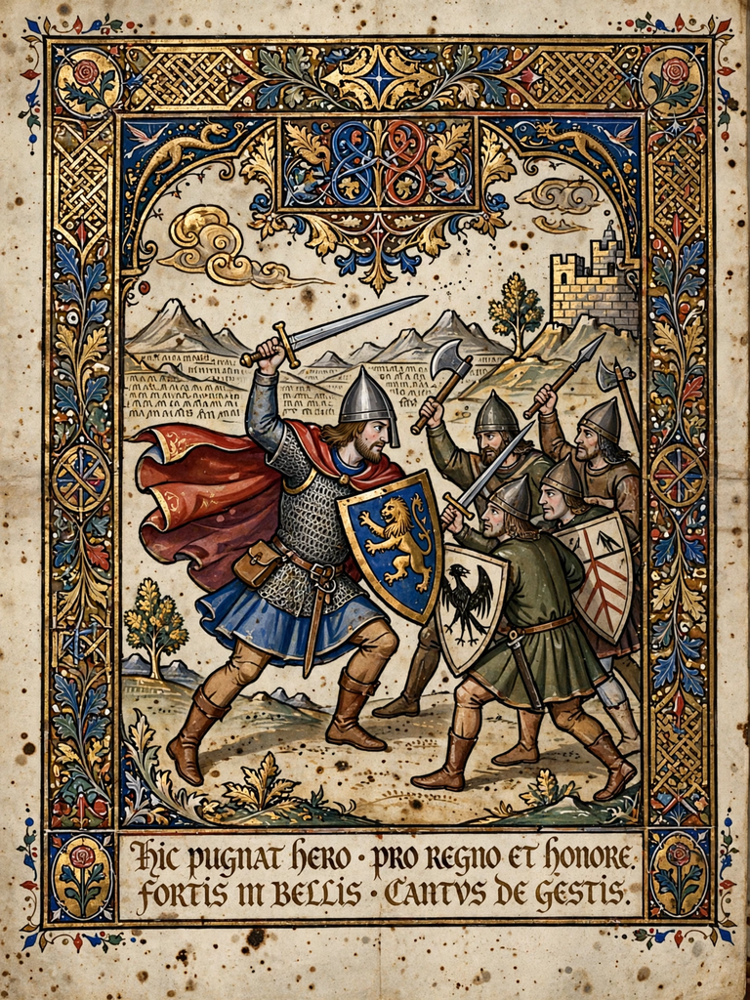

Epic poetry
From Wikipedia, the free encyclopedia

Epic poetry is a lengthy narrative poem, ordinarily concerning a serious subject containing details of heroic deeds and events significant to a culture or nation. The earliest epics — the Sumerian Epic of Gilgamesh, Homer's Iliad and Odyssey — were composed in oral traditions and set the pattern for the Western canon, while the Sanskrit Mahabharata and Ramayana anchor the Indian tradition.
Characteristics
Epics typically begin in medias res with an invocation to a muse, range across vast settings and long time spans, and centre on a hero of national or cosmic stature whose deeds include a descent to the underworld. Their style uses elevated diction, epithets, extended similes and catalogues — features adapted to oral composition and memorisation, as Milman Parry's oral-formulaic theory demonstrated for Homer.
Major epics
Beyond Gilgamesh and Homer, the world's great epics include Virgil's Aeneid, the Indian Mahabharata (the longest epic poem, at some 100,000 couplets) and Ramayana, the Old English Beowulf, the Persian Shahnameh, the Song of Roland, the German Nibelungenlied, the Malian Epic of Sundiata and the Finnish Kalevala. Literary epics continued through Dante's Divine Comedy, John Milton's Paradise Lost and beyond.
Decline and modern echoes
The epic yielded to the novel as the dominant long narrative form, but its scale and archetypes survive in fantasy literature, national poetry of the Romantic era and popular franchises consciously modelled on heroic myth (Joseph Campbell's 'Monomyth').